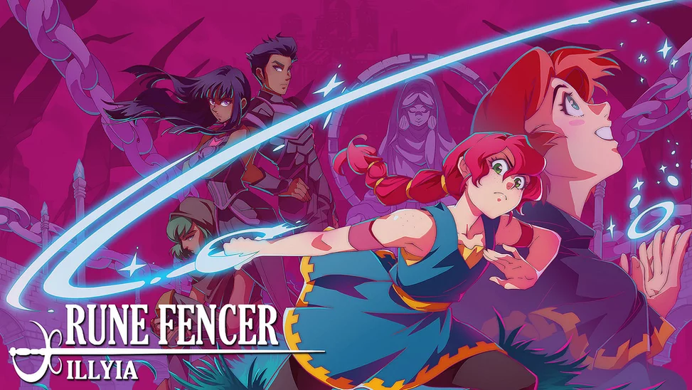
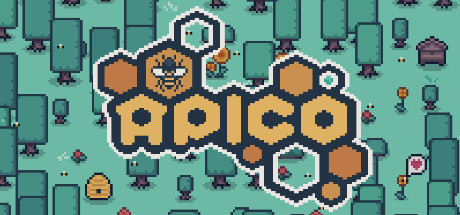

Rune Fencer Illyia
Atraviesa un mundo enorme, misterioso y peligroso, conoce a extraños aliados y enemigos, y lucha contra numerosos ataques con un rápido juego de espadas y una poderosa magia rúnica.

APICO
APICO combina de manera única recolección de recursos, biología y minijuegos de apicultura, tomando ideas de una mezcla de la vida real y la apicultura de fantasía y la floricultura.

Berserk Boy
Berserk Boy es una plataforma de acción de 2D acción vibrante y inspirada que te permite ... ¡Ir Berserk! Cambia en diferentes formas y utiliza el poder del Trueno, Fuego, Tierra, Aire y hielo.